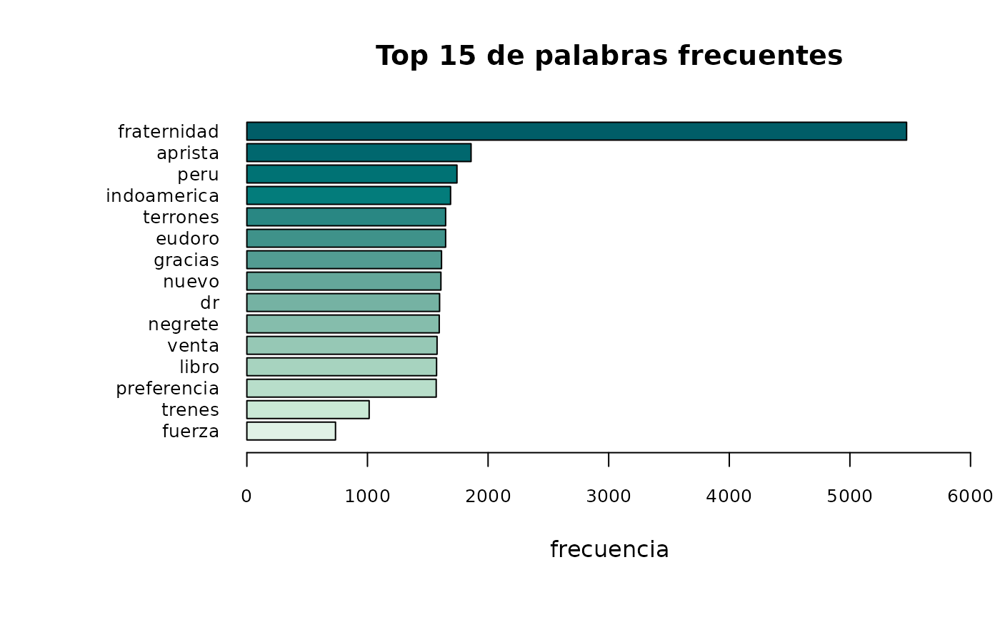

Tokenizar con ACEP
Diego Pacheco
2023-08-03
Source:vignettes/tokenizar_con_acep.Rmd
tokenizar_con_acep.RmdFunción acep_token()
En primer lugar cargamos la librería ACEP. Luego, cargamos una base de tweets para su prueba.
library(ACEP)
url <- "https://github.com/HDyCSC/datos/raw/main/la_fraternidad.rds"
base <- subset(acep_load_base(url), select = text)$textEjecutamos la función acep_token() para los primeros dos
elementos de la base.
¿Cuál es el resultado?
La función acep_token toma el vector y realiza
diferentes acciones:
Verifica que el objeto entregado sea un vector (de lo contrario indica un mensaje de advertencia)
Cambia todo el texto a minúsculas
-
Crea un nuevo data frame con la siguiente información:
texto_id (columna que numera el documento)
tokens (el token propiamente)
Cabe mencionar que los tokens quedarán identificados a través de los espacios en blanco, es decir, cada palabra es un token.
tweets <- acep_token(base[1:2])
head(tweets)#> texto_id tokens
#> 1 1 googlea
#> 2 1 fraternidad
#> 3 2 protesta
#> 4 2 fraternidad
#> 5 2 desoye
#> 6 2 conciliacionEn este resultado podemos ver cómo la función identifica a cada observación como un documento aparte (en este caso, cada tweet es un documento identificado en la columna ‘texto_id’). Por su parte, la columna ‘tokens’ es la columna en la que la función aísla cada token.
Función acep_token_table()
Una vez que tenemos el data frame creado a partir de la función
acep_token(), podemos utilizar la
función acep_table() para obtener un nuevo data frame que
nos proveerá la siguiente información:
token
frec (frecuencia que aparece ese token)
prop (el peso que tiene ese token en el total del corpus)
Para obtener una tabla que tenga sentido, podemos utilizar en primer
lugar la función acep_cleaning() para deshacernos de los
stopwords, urls, menciones, hashtags, etc.
base_limpia <- acep_cleaning(base)En segunda instancia, creamos un nuevo objeto derivado de la base
limpia con acep_token() que nos devuelve, como vimos
previamente, una tabla con la información de cada token.
tabla_tokenizada <- acep_token(base_limpia)
head(tabla_tokenizada)#> texto_id tokens
#> 1 1 googlea
#> 2 1 fraternidad
#> 3 2 protesta
#> 4 2 fraternidad
#> 5 2 desoye
#> 6 2 conciliacionPor último, aplicamos la función acep_token_table() a la
columna ‘tokens’.
Por defecto, acep_token_table() nos devuelve los 10
primeros registros, es decir, las 10 palabras con mayor frecuencia.
Si quisiéramos modificar la cantidad de palabras, debemos modificar el parámetro ‘u’ =
Suponiendo que queremos obtener los 20 token de mayor frecuencia:
acep_token_table(tabla_tokenizada$token, u = 20)
acep_token_table(tabla_tokenizada$tokens, u = 15)#> token frec prop
#> 1 fraternidad 1956 0.47847358
#> 2 trenes 264 0.06457926
#> 3 paro 217 0.05308219
#> 4 conciliacion 184 0.04500978
#> 5 paz 175 0.04280822
#> 6 obligatoria 163 0.03987280
#> 7 libertad 160 0.03913894
#> 8 igualdad 157 0.03840509
#> 9 si 140 0.03424658
#> 10 amor 120 0.02935421
#> 11 universal 120 0.02935421
#> 12 fuerza 117 0.02862035
#> 13 medida 107 0.02617417
#> 14 mundo 106 0.02592955
#> 15 ser 102 0.02495108Función acep_token_plot()
Esta función permite visualizar en un gráfico de barras, los tokens más frecuentes.
A partir del resultado de acep_token(), podemos obtener
el gráfico con los tokens más frecuentes.
Por defecto, el resultado serán los 10 tokens más frecuentes, sin embargo, a través del parámetro “u =” podemos modificar la cantidad de tokens a visualizar.
En este ejemplo, tomamos la tabla tokenizada y le indicamos la columna “token” a visualizar.
acep_token_plot(tabla_tokenizada$tokens, u = 15)